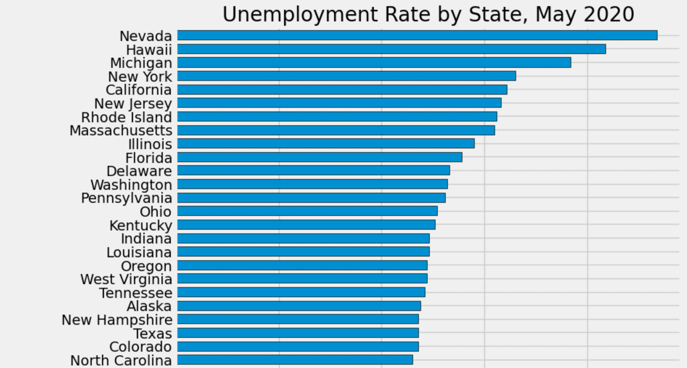
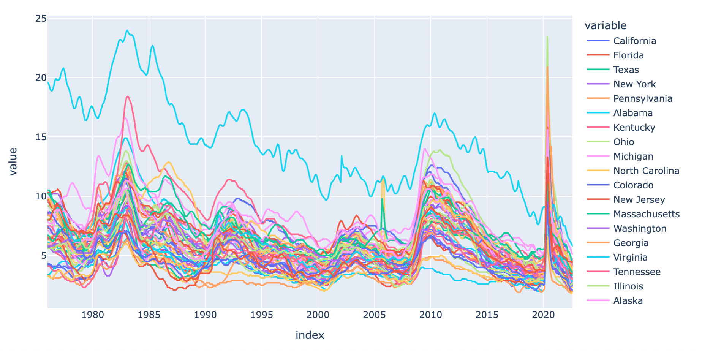
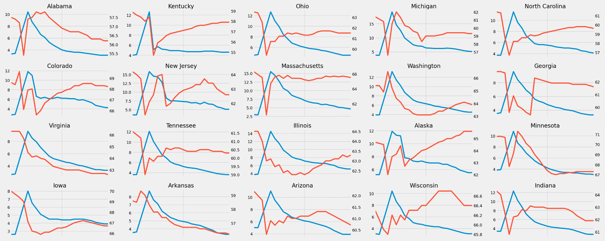

We created a bunch of different visualizations to better understand our data.
Here, we see a bar graph showing unemployment rates at a given time, May 2020 for example,
for various states.

Here, we see unemployment rates over time, from the 1980's to 2020's, for various
states. We see that for the most part, all these lines generally follow each other.

And finally, we plotted each state's unemployment line graph against its participation rate line graph.
It's interesting that not only do all of these states seem to have different behaviors with both their
unemployment and participation rates, but also that there doesn't seem to be a discernible relationship
between unemployment and participation that can be clearly extrapolated.
